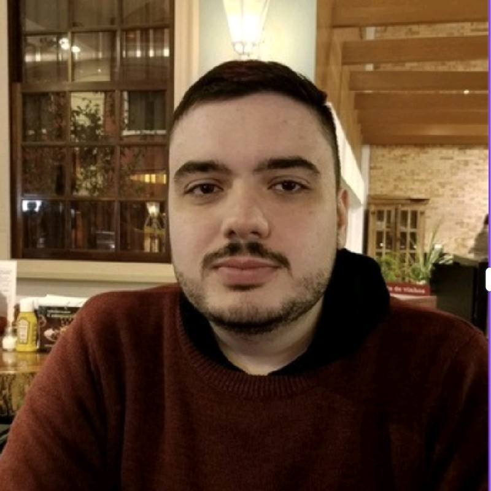

About Miguel Honczaryk Ribeiro

Hello there! My name is Miguel Honczaryk Ribeiro. I am a tech enthusiast based in Curitiba with experience in C, Python, and Web Development. My passion is to create innovative and visually appealing solutions that solve real-world problems.
I am currently pursuing a double degree: I'm enrolled in the Computer Science program at the Federal University of Paraná (UFPR). I firmly believe that the intersection of math and code is where the magic happens, and I'm always seeking new challenges in Statistics and Data Science.
Outside the programming world, I like to play videogames, read Sci-Fi novels, and hang out with my friends and girlfriend. If you seek someone who is dedicated, creative, and hungry for knowledge, I'd be glad to collaborate!
My Skills:
- HTML5 & CSS3
- JavaScript (ES6+)
- C / C++
- Python & Data Science
- Git & GitHub
- Advanced English
- Native Portuguese